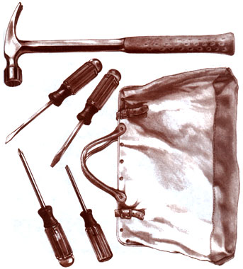

When, as a first-time home owner, I had to borrow things to get the simplest household jobs done, it wasn't long before I assembled a half-dozen or so hand tools that would take care of just about anything that cropped up. Now that I've put together a moderately impressive workshop, I still look to that core group of old reliables for quick fixes in and around the house.
There's something to be said for the luxury of being able to carry most of what you need in a small kit bag. For one thing, a fabric gripsack is compact and inexpensive and can be left packed so you're never in doubt as to what's inside. Moreover, a bag is considerably more supple than a toolbox and has no sharp comers to suffer or lids that refuse to close. Finally, because there's only a handful of items in it, there's little worry that things will get buried at the bottom.
Linemen often use a leather carryall that's just about perfect for this purpose; more realistically, local and mail-order surplus retailers usually have military engineers' bags or tool grips available in canvas for less than $10. I use an oil-stained nylon athletic bag my wife discarded last year. At any rate, it's apparent that there's no need to get fancy. The bag should be at least as long as your largest tool, needn't be wider than 8" or so and no more than that in height. Try to choose a design that has top handles, a closable opening and a stiff bottom with metal feet.
The three portable power tools covered later in this article have their own carrying cases or at least can be carried separately. And though their convenience can't be argued (unless you happen to be somewhere without power), it's sometimes easier, often necessary, and almost always more satisfying to simply do the job by hand.
I'm by no means an elitist, yet when it comes to tools, I try to buy the best I can afford-within my ability to use them. If the biggest mistake is to spend good money on junk tools, the second biggest is to spend even better money on superb tools you don't really need. The dollars you save may allow you a greater variety when you put your package together.
Fortunately, it's not all that difficult to spot quality when it comes to tools. Finish, feel, and attention to detail will separate the cosmetic marques from the working brands, even if you're ignorant of reputation. Generally, you'll find that the old name brands remain reliable, though newly imported lines (especially among higher-priced Japanese, German, and English products) easily rival our traditional "Yankee" quality. In short, you get what you pay for, and if you shop carefully, you may get even more.
For general maintenance, it's possible to spend less than $100 and still assemble a good cross section of honest, working hardware. For half again as much, you can com plement your selection with additional tools chosen to match your specific needs. The listing below certainly isn't carved in stone, but it reflects a choice made from experience, and one that can be easily fine-tuned to your own pleasure.
HAMMER: The 16-ounce curved-claw wooden hammer may be an American classic, but it's not the one I would choose for my one and only. For starters, those pretty wooden handles can break too easily; second, a one-pound head just isn't meaty enough for the heavy-duty framing and whacking jobs that sometimes come up.
My all-time favorite hammer is a 22ounce rip-claw framing hammer with a solid steel handle and a mill-face head. The extra six ounces of weight puts some authority into the swing without being unwieldy. The same goes for the 3" or 4" longer handle common to the framers. Though many professionals swear by hickory-wood handles, it's more because they tend to absorb shock than because they're particularly bulletproof.
A steel slender-shank handle covered with a nylon grip is almost perfectly balanced and nearly indestructible, and shouldn't wear down your wrist and forearm unless you're beating with it 10 hours a day. Some other handle choices are fiberglass and tubular steel, but you should make your decision based upon how it feels in your hand.
Curved-claw hammers are fine if you pull nails all day, but the straighter rip claw will pull nails and sink its fangs into wood, so it works as a pry bar, too. And though there's certainly nothing wrong with a smooth-faced head, the mill-face or "waffle" design grips the nailhead at once and tends to send it home straight. It's also great for dry wall or framing work when you want the head of the nail set slightly below the surface.
SCREWDRIVERS: In my workshop tool cabinet, my mainstream screwdrivers are square-shank, plastic-handle models: one 1/4" flat blade, a 3/16" flat blade, a No. 1 and a No. 2 Phillips head, and a small instrument screwdriver with a 5/64" square-ground blade. If you want to carry five screwdrivers around, they certainly won't be a burden, but consider buying one spiral ratchet driver instead. You'll recognize it by the crosshatch grooves in the shank and the knurled grip collar near the tip.
My choice would be a better quality 10" domestic or imported model; the bargain types aren't a bargain at all. The best thing about spiral ratchet screwdrivers is that they turn clockwise (or counter-clockwise) as you pump the handle. A spring feeds the shaft outward automatically once you push it in, or the shaft can be locked in position if you like.
Some brands of ratchet screwdrivers have a hollow, chambered handle to store the bits, which include 3/16" and 1/4" slotted blades, a No. 2 Phillips blade, and two or three drill bits from 5/64" to 9/64". If you plan on driving a lot of screws that require inordinate levels of torque, consider buying a bit for your electric drill; if not, the push screwdriver should suit nicely.
PLIERS: For some reason,I really haven't used a pair of common slip-joint pliers in years, probably because it's been that long since I purchased my 10" curved-jaw locking pliers. For hand-gripping or twisting they work as well as the slip-joints, but for crude wrench work their lockjaw bite is far superior. With the curved jaw, they fit pipes as well as square bars and will exert enough pressure to serve as a clamp or small vise if you need one. I like the 10" ones because they're large enough to do some damage, yet still fit comfortably in one hand for detail work. These are the ones you shouldn't do without.
SQUARE: For some, using a square might seem a bit fussy, but it's a necessity if you do any building project and want the job to turn out right. The handiest one for me has been the combination square, which obviously enough combines several functions. This design has a stock with a perpendicular edge and a 45° miter edge. The stock slides along a 12" steel blade and can be locked in any position with a drawbolt for use as a marking gauge. There's a spirit (bubble) level built into the stock, and often a removable marking scriber, too.
The great thing about this tool is that it's fairly accurate in all its functions, though that might be optimistic in the case of the level. Look for a 1 "-wide blade that incorp orates a 12" graduated ruler, and a milled steel stock (a die-cast head is a good second choice).
CHISELS: It's inevitable that someday you'll be forced to mortise a doorjamb or pare down a furniture tenon. When that time comes, a chisel is about the only tool that can do the job right. Paring chisels are too delicate and precise to suit a wide range of home-improvement challenges, so what you most likely want is a small set of butt chisels-comfortable in the hand yet tough enough to beat with a mallet when the need arises. For deeper or heavier work, there are mortise chisels (straight sided with noticeably stout blades) and their larger cousins, firmers (long and very substantial, with blades 2" wide or more).
Depending upon what you want to spend, a good starter set would include three or four chisels, ranging in width from 1/4" to 1" (the smallest size would probably be omitted from a three-piece set). The blades will be bevel-sided and-if this information is available-tempered to a Rockwell hardness of 58 or so to assure a good balance of resiliency and edge-holding characteristics. If you want plastic handles, be sure they're designed to take hammer blows; wood-handled designs should have impact caps for the same reason (some boxwood handles are meant to be struck only with wooden mallets, though). Buy by the set and you have a good chance of getting a protective pouch in the bargain; you'll need it to keep the edges sharp.
SAW: Even if you use a circular saw for the lion's share of around-the-house projects, you'll want a decent handsaw to take care of close work in tight places. At the bench, a backsaw or trim saw does nicely but you want one that fits comfortably in a 16" bag. Some pruners or folding saws would probably suffice, but my choice is a Japanese Dozuki with a removable blade. I don't know what Dozuki means, but to me it translates as a modified hacksaw with an aggressive tooth pattern that somehow makes an exceptionally clean cut. Many Dozukis have a full back frame and a thin blade with 20 to 28 teeth per inch, but for general use, keep your eyes peeled for a thicker, coarser blade with 12 or 14 teeth to the inch. Its added rigidity allows the use of a short back frame so the blade can pass fully through the work, and the teeth are designed to cut on the pull stroke for smooth, bowfree action. Total length is about 20-1/2", but that's reduced by half when the 9-1/2" blade is unscrewed from the handle.
ADDITIONAL ITEMS: The halfdozen core group is a substantial foundation on which to base your portable workshop. But as you tackle a variety of repairs, it'll become painfully apparent that it wouldn't hurt to enhance your collection as different needs arise. A good steel measuring tape is worth every bit of the $10 you'll probably pay for it. The 16' size is about the shortest I'd buy, and I prefer the 3/4" width to the 1/2" because it stands unsupported for a greater distance. A friction-reducing coated blade and a functional locking mechanism are two musts.
Sooner or later, a utility knife should be part of you pouch. There are several good retractable models, but the fixed blade with storage built into the split handle is more durable, though you'll need some kind of sheath for it.
Don't be surprised if you discover that a pair of needle-nose pliers with a built-in side cutter and wire stripper are pretty convenient for minor electrical work and for setting springs and hooks. Buy only the best quality, preferably with insulated handles and a straight-jaw design. The smaller 5" size will answer to most jobs, but I pre fer the 8" pliers because they offer good leverage and still allow a firm purchase even on small parts.
A file is right handy to have around, but you really need several different types of varied bite. The answer for me is a four-in-hand, sometimes called a horse rasp, after one version of the tool. It's an 8" or 10" file about 1-1/8" wide, with one side half-rounded and the other flat. Most designs include a coarse and medium rasp and a coarse and medium file to cover most general jobs.
Preparation for painting requires the use of a scraper, and the most functional kind I've found looks like a small, flat pry bar. It's commonly called a ship scraper, but really doesn't resemble the navy scraper, which was designed to be struck with a hammer. Actually, it's a modified beekeeper's hive tool and can be used as a pry, nail puller, chisel, scraper, and pinch bar. Most are about 10" long, and all have one straight and one curved end. Quality varies with this tool, so look for a name brand with resilient steel that can be sharpened with a file.
The last item to fill your tool bag ought to be a standard cold chisel. If you're buying just one, choose a 1/2" or 5/8" tip. But several manufacturers offer attractively priced sets of chisels and punches, which make household metalworking jobs a lot easier.
|
 |
|
|